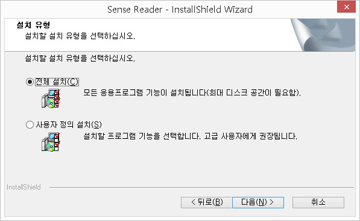
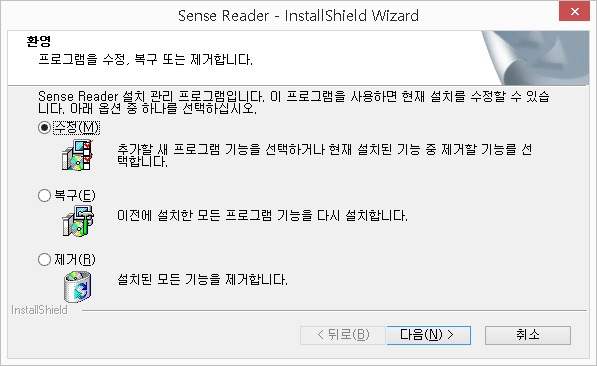
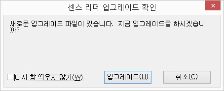
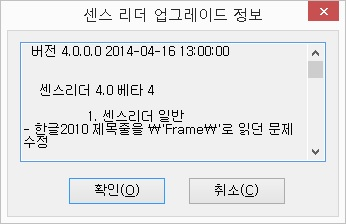
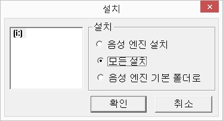
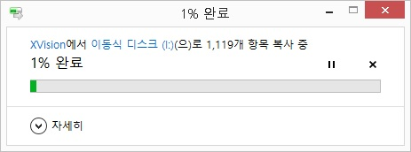
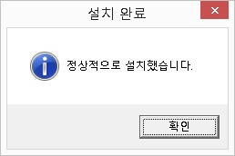
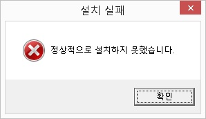
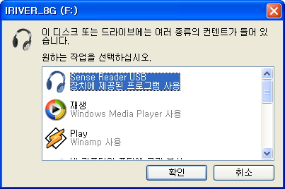
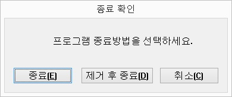

센스리더는 기본적으로 윈도우즈가 정상적으로 동작할 수 있는 시스템이라면 별도의 하드웨어 업그레이드가 필요없이 사용 가능합니다.
단, 음성출력을 위해 Voiceware사의 음성엔진을 사용하는 경우, 음성엔진 자체가 시스템에 많은 부하를 주기 때문에 어느 정도 시스템의 성능이 유지되어야 무난하게 컴퓨터를 사용할 수 있습니다.
센스리더는 윈도우즈7 이상의 운영체제를 지원합니다.
다음은 윈도우즈7 운영체제와 Voiceware 음성엔진을 사용할 때의 권장사양입니다.
CPU: Pentium Core2 이상
memory: 2gb 이상
하드디스크: 400mb(베이직), 3gb(프로페셔널 / 더 넥스트) 이상의 여유 공간
사운드 카드(Via 사운드카드와는 호환성이 좋지 않습니다.)
참고사항: 저사양 컴퓨터에서 Voiceware사의 음성엔진을 사용하는 경우, 컴퓨터 동작이 무겁게 느껴진다면 음성엔진을 'Voicetext(Yumi) small'로 변경하고 사용하십시요. 음성엔진 자체의 부하가 줄어들기 때문에 반응속도가 개선됩니다.
센스리더를 설치하기 위해서는 제품 패키지에 포함된 프로그램 설치용 USB 메모리스틱을 포트에 삽입합니다.
USB 메모리 삽입 이후 설치 프로그램이 자동 실행되며, 음성 안내에 따라 설치 과정을 진행합니다. 만일, 설치 프로그램이 자동 실행되지 않는다면, 내 컴퓨터의 'XVSRD_XXX' 라는 드라이브를 찾아 진입한 이후 'setup.exe' 파일을 직접 실행합니다.
설치 프로그램 실행 이후, 첫 번째 대화상자에서 '전체 설치'나 '사용자 정의 설치' 옵션을 선택합니다.(방향키를 이용해 옵션을 선택한 다음 '다음' 버튼을 실행함)

센스리더의 구성 요소 설치에 대한 선택 없이 기본 설정된 값으로 센스리더를 설치합니다.
초보 사용자의 경우 이 옵션을 선택하는 것이 바람직하며, 전체 설치 옵션으로 센스리더를 설치한 경우 윈도우즈 시작시 센스리더가 자동으로 실행됩니다.
설치 과정 중 음성 엔진의 선택, 센스리더의 설치 경로 변경, 디스플레이 설정, 도구 프로그램(독서기, 타자연습, 사전, 보조 음성엔진 등)의 선택적 설치 등을 사용자가 선택할 수 있습니다.
각 대화상자의 옵션 목록에서 방향키를 이용하여 원하는 항목에 위치한 다음 <Space> 키를 눌러 옵션을 변경합니다.
설치 과정 중 다음의 키를 사용하여 현재 설치 화면에 대한 정보를 음성으로 확인할 수 있습니다.
1) Ctrl-Shift T: 설치 화면의 제목 줄을 읽습니다.
2) Ctrl-Shift W : 설치 화면 전체를 읽습니다.
3) Ctrl-Shift F : 현재 포커스 된 객체를 읽습니다.
참고사항: 센스리더를 설치한 후에는 사용자 정보(아이디, 비밀번호)를 입력해야 정상 이용이 가능합니다.
만약, 센스리더 구입 이후 사용자 번호를 발급받지 못했다면 회사로 연락하여 새로운 사용자 번호를 발급받습니다.(사용자 번호가 입력되지 않은 경우 센스리더는 30분 동안 사용이 가능한 데모 버전으로 동작하게 됩니다.)
다음의 방법을 사용하여 센스리더를 제거할 수 있습니다.
① 센스리더 설치 USB 메모리를 포트에 삽입하여 설치 프로그램을 다시 실행하거나, 시작메뉴의 [프로그램] -> [센스 리더] -> [센스리더 제거] 항목을 차례로 선택하여 실행합니다.
② 잠시 후 '설치 방법 선택' 대화상자가 나타나면 <위/아래 화살표> 키를 눌러 '제거' 옵션을 선택한 다음 <다음> 버튼을 누릅니다.
③ '파일 삭제 확인' 대화상자가 나타나면 '확인' 버튼을 눌러 센스리더 제거 과정을 시작합니다.
④ 잠시 후 센스리더 제거 완료를 알리는 대화상자가 출력됩니다. <Enter> 키를 누르면 컴퓨터가 다시 시작됩니다.
또는 <Ctrl-\(백슬래시)>를 눌러 센스리더 윈도우를 활성화하고 아래 방향키를 이용하여 센스리더 툴바 메뉴 중 '2. 센스리더 도구' 메뉴에서 엔터를 누릅니다.
잠시 후 프로그램 삭제 질문 대화상자가 나타나면 '예'에서 엔터를 누릅니다.
센스리더가 삭제되고 자동으로 컴퓨터가 다시시작 됩니다.
구성요소 변경이란, 센스리더를 설치한 이후 센스리더를 구성하는 요소들인 음성엔진이나 센스 독서기 같은 도구 프로그램들을 사용자의 필요에 따라 추가 및 제거하는 작업을 의미합니다.
다음의 방법에 따라 구성요소를 추가 / 제거합니다.
① 센스리더 설치 USB 메모리를 포트에 삽입하여 설치 프로그램을 다시 실행하거나, 시작메뉴의 [프로그램] -> [센스 리더] -> [센스리더 제거] 항목을 차례로 선택하여 실행합니다.

센스리더는 프로그램 성능 향상과 버그 수정을 위해 자동 업그레이드와 수동 업그레이드 등 2가지 형태로 업그레이드를 진행하고 있습니다.
온라인을 통한 자동 업그레이드는 일부의 파일 교체만으로 센스리더의 기능을 향상시킬 수 있을 때 진행하게 되며, 수동 업그레이드는 파일 교체가 많거나 자동 업그레이드로 새로운 버전을 정상적으로 설치하기 힘들 때 제공하게 됩니다.
센스리더는 프로그램이 실행될 때 인터넷을 통해 업그레이드 정보를 조사합니다.
만일 서버에서 업그레이드할 내용이 발견되었다면 업그레이드 질문 대화상자가 나타나며 새로운 업그레이드를 적용 시킬 것인가를 묻게 됩니다.
이 대화상자에서 '확인' 버튼을 누르면 업그레이드 정보를 다운로드 받아 업그레이드를 진행하게 됩니다.


업그레이드에 필요한 파일을 다운로드 받는 과정 중에는 진행 상황을 나타내는 대화상자가 표시되며, 다운로드가 완료되면 자동으로 업그레이드에 들어가게 됩니다.
이후 모든 설치가 완료되면 자동으로 컴퓨터가 재부팅되면서 업그레이드 과정이 모두 끝나게 됩니다.
만일, 실수로 업그레이드 질문 대화상자를 닫았거나 대화상자가 정상적으로 출력되지 않았다면 [도움말] 메뉴의 [센스 리더 업그레이드] 메뉴를 실행하여 자동 업그레이드를 다시 실행할 수 있습니다.
자동 업그레이드는 인터넷이 연결된 경우에만 사용 가능합니다.
온라인 자동 업그레이드로 새로운 버전을 설치하기 힘든 경우 사용자가 직접 수동으로 센스리더를 설치해야 합니다.
수동 업그레이드 과정은 현재 컴퓨터에 설치되어 있는 센스리더를 먼저 제거한 다음, 처음 센스리더를 설치하는 과정에 따라 새로운 버전을 설치하면 됩니다.
수동 업그레이드의 경우 사용자가 설정한 환경은 센스리더 제거와 동시에 없어지게 됨으로 사용자가 설정한 환경을 그대로 유지하고 싶다면 센스리더를 제거하기 전에 클라우드 환경 저장 및 가져오기 기능을 통해 환경을 백업해 두었다가 새로운 버전 설치 이후 클라우드 환경 가져오기를 하면 됩니다.
새로운 업그레이드 버전의 출시는 홈페이지나 넓은마을의 센스리더 포럼을 통해 공지해 드림으로 일정 시간마다 공지사항을 확인해 주시기를 부탁드립니다.
센스리더는 이동이 잦은 사용자를 위하여 USB 메모리 등의 이동식 저장장치에서 센스리더를 직접 실행할 수 있는 기능을 제공합니다.
이 기능을 활용하면 임시로 사용하는 컴퓨터에서 센스리더를 사용하기 위해 하드디스크에 센스리더를 설치해야 하는 번거로운 작업을 피할 수 있습니다.
또한, USB 이동식 저장장치에 음성엔진만을 복사하여 사용하는 기능을 제공하여 센스리더의 반응 속도를 개선하고 대용량 데이터 파일 로딩에 따른 하드디스크의 부하를 줄일 수 있습니다.
이동식 디스크에서 센스리더를 직접 실행하거나 음성엔진을 이동식 메모리에 복사해서 이용하려면, 현재 하드디스크에 설치되어 있는 센스리더를 이동식 디스크에 재설치하는 과정을 먼저 진행해야 합니다.(이동식 하드디스크는 이 기능을 지원하지 않음)
다음의 방법에 따라 이동식 디스크에 센스리더를 재설치합니다.
① 준비한 USB 메모리나 기타 이동식 메모리를 컴퓨터 포트에 꽂습니다.
② <Ctrl-\(백슬래시)> 키를 눌러 센스리더 윈도우를 열고 아래 방향키로 '2. 센스리더 도구' 에서 엔터 후 '디스크 버전 만들기' 항목을 찾아 실행합니다.
③ 설치 대화상자가 출력되면 음성 엔진 설치와 모든 설치 중 사용자가 원하는 옵션을 선택합니다.
- 모든 설치: 센스리더를 USB 저장장치에서 실행하기 위한 옵션입니다. 이 옵션을 선택한 경우 현재 컴퓨터에 설치되어 있는 센스리더 프로그램 및 설정 전체가 USB 저장장치로 복사됩니다. 이후 준비된 USB 저장장치를 이용하여 센스리더가 설치되지 않은 컴퓨터에서 간편하게 센스리더를 설치/사용할 수 있습니다.
- 음성 엔진 설치: 센스리더의 음성엔진만을 USB 메모리로 복사합니다. 이 경우 센스리더는 하드디스크에서 동작하고 음성 엔진만 USB 메모리로 복사/실행되어 센스리더의 동작이 많이 가벼워집니다. 센스리더 실행 중 USB 메모리가 제거되면 음성 출력이 되지 않는다는 점에 주의합니다.
- 음성 엔진 기본 폴더로: 음성엔진을 이동식 메모리로 설정해서 사용하던 것을 하드디스크의 음성엔진으로 다시 변경하는 메뉴입니다. 단, 하드디스크에 센스리더 음성엔진이 존재해야합니다.




센스리더를 이동식 메모리에서 실행하려면 해당 컴퓨터에 센스리더가 설치되어 있지 않아야 한다는 점에 주의합니다.
다음의 과정에 따라 이동식 디스크에서 센스리더를 실행할 수 있습니다.
① 센스리더가 설치된 이동식 디스크를 컴퓨터 포트에 삽입합니다.
② <혼합된 컨텐츠> 대화상자가 나타날 때까지 잠시 기다렸다가 목록에서 '센스리더' 항목을 찾아 <Enter> 키를 누릅니다.
이 대화상자는 센스리더가 실행되기 전 상태에서 나타나므로 음성지원을 받을 수 없다는 점에 유의합니다. 그러나 대개의 경우 '센스리더' 항목은 목록의 첫 항목으로 구성되며, 포커스가 해당 항목에 위치하므로 단순히 <Enter> 키만 눌러도 됩니다.

임시로 사용하던 컴퓨터에서 모든 작업이 끝났다면 센스리더 실행을 위해 하드디스크에 복사했던 파일들을 다음 과정에 따라 삭제하도록 합니다.
① 센스리더가 실행 중인 상태에서 <Insert-F4> 키를 누릅니다.
② '종료확인' 대화상자가 나타나면 <Tab> 키를 눌러서 '제거 후 종료' 버튼으로 이동한 후 <Enter> 키를 입력합니다.
(삭제하지 않고 종료하기 원하는 경우 '종료' 버튼에서 <Enter> 키를 입력하면 됩니다.)

* 센스리더 관련 파일과 설정을 수동으로 삭제하고 싶다면 명령 프롬프트(cmd)를 실행하여 이동식 디스크의 '센스 리더' 폴더로 이동한 다음 "uninstall /all' 명령을 실행합니다.
1. 이동식 디스크에 센스리더를 재설치하는 경우 설치된 추가 음성엔진과 센스사전까지 모두 이동식디스크로 복사가 됩니다. 설치하기 전에 사용하는 이동식디스크의 용량을 충분히 확보해주세요.(프로페셔널 전체 기능 설치시 약 2G 이상의 메모리 여유공간이 필요함)
2. 음성엔진만 설치했을 경우 이동식 디스크를 제거하면 더이상 음성출력이 되지 않습니다. 이런 경우 다시 이동식디스크를 연결하고 센스리더를 재실행해 주십시요.
3. 더이상 음성엔진을 이동식디스크로 사용하지 않고, 다시 하드디스크에서 사용하기 원할 경우 '음성 엔진 기본 폴더로' 옵션을 재실행해 주면 됩니다. 음성엔진 변경은 센스리더를 재시작한 이후 적용됩니다.